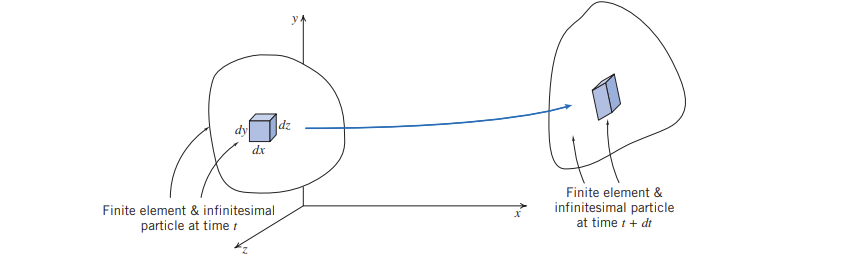

A typical finite fluid element, within which we have selected an infinitesimal particle of mass dm and initial volume dx dy dz, at time t, and as it
(and the infinitesimal particle) may appear after a time interval dt. The finite element has moved and changed its shape and orientation

While the finite element has quite severe distortion, the infinitesimal particle has changes in shape limited to stretching/shrinking and rotation of the element’s sides, because we are
considering both an infinitesimal time step and particle, so that the sides remain straight
We can decompose this particle’s motion into four components:
- translation, in which the particle moves from one point to another
- rotation of the particle, which can occur about any or all of the x, y or z axes
- linear deformation, in which the particle’s sides stretch or contract
- angular deformation, in which the angles (which were initially 90° for our particle) between the sides change